library(dplyr)
library(data.table)
library(ggplot2)
options(stringsAsFactors = F)
parse_pop = function(x) {
x = unlist(lapply(strsplit(x, '-'), function(y) {
if(length(y) > 1) {
return(paste0(y[1], '-', y[2]))
} else {
return(y)
}
}))
}
theme_set(theme_bw(base_size = 10))
source('../code/rlib_doc.R')
traits = tolower(read.csv('../external_data/martin_et_al_2019ng_table_s6.csv')$Trait)
diag_df = data.frame(trait = traits, index = 1 : 17)Gene weights were obtained from S-PrediXcan run using MESA CAU model.
mesa_models = c('AFA', 'AFHI', 'CAU', 'ALL', 'HIS')
result = list()
for(m in mesa_models) {
for(i in 1 : 17) {
for(t in traits) {
filename = paste0('~/Desktop/tmp/ptrs_mesa_r2/ptrs_mesa_r2_', m, '/ptrs-r2_subset', i, '_x_', t, '.txt')
tmp = read.table(filename, header = T, sep = '\t')
result[[length(result) + 1]] = tmp %>% mutate(subset = i, trait = t, model = m)
}
}
}
df_mesa = do.call(rbind, result)
df_mesa$population = parse_pop(df_mesa$population)
df_mesa$ptrs_col = factor(df_mesa$ptrs_col, levels = unique(df_mesa$ptrs_col))result = list()
for(i in 1 : 17) {
for(t in traits) {
filename = paste0('~/Desktop/tmp/ptrs_r2/ptrs-r2_subset', i, '_x_', t, '.txt')
tmp = read.table(filename, header = T, sep = '\t')
result[[length(result) + 1]] = tmp %>% mutate(subset = i, trait = t, model = 'gtex_v8_ctimp')
}
}
df_gtex = do.call(rbind, result)
df_gtex$population = parse_pop(df_gtex$population)
df_gtex$ptrs_col = factor(df_gtex$ptrs_col, levels = unique(df_gtex$ptrs_col))df_ptrs = rbind(df_mesa %>% select(-SSE.wo, -SSE.with), df_gtex)df_ptrs %>% ggplot() + geom_boxplot(aes(x = ptrs_col, y = r2, color = population)) + facet_wrap(~model, ncol = 2, scales = 'free_y') + theme(axis.text.x = element_text(angle = 90, hjust = 1, vjust = 0.5)) + theme(legend.position = 'bottom')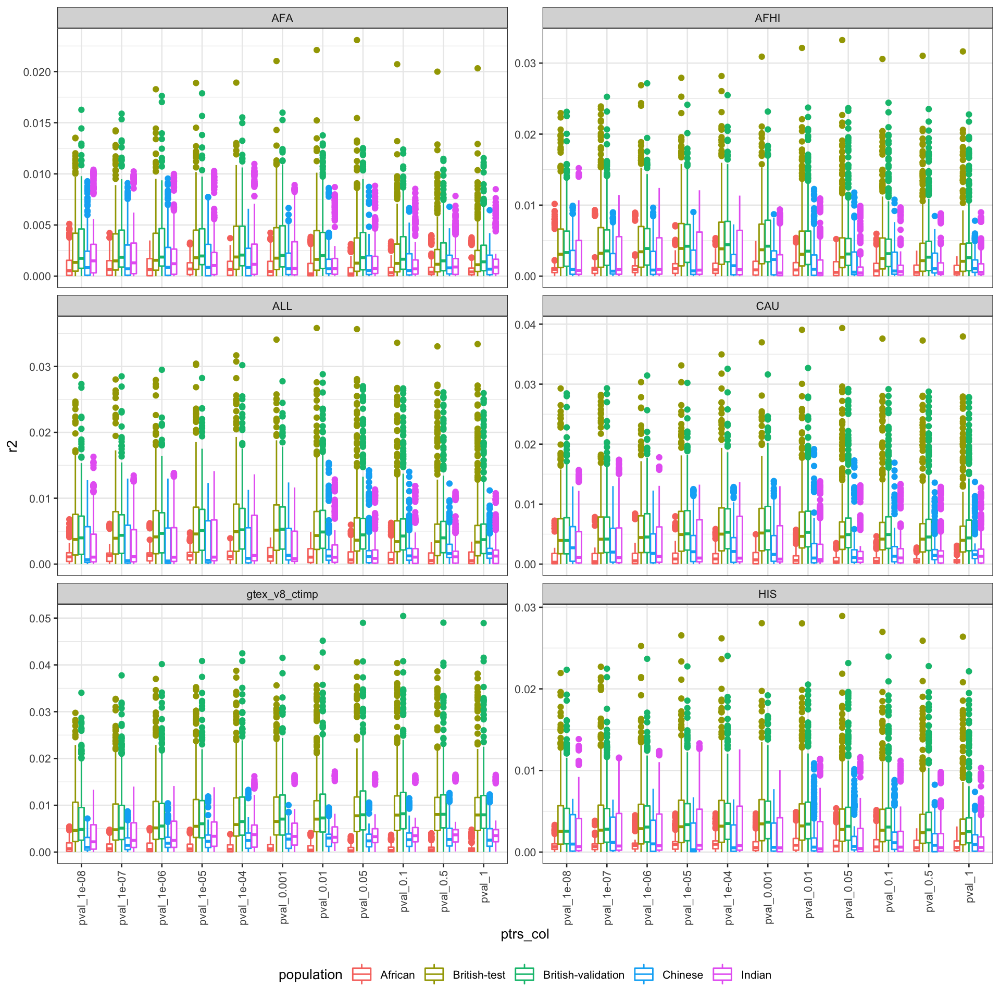
df_ptrs %>% filter(model %in% c('CAU', 'AFHI')) %>% select(-pval) %>% dcast(population + ptrs_col + subset + trait ~ model, value.var = 'r2') %>% filter(paste(trait, subset) %in% paste(diag_df$trait, diag_df$index)) %>%
ggplot() + geom_point(aes(x = CAU, y = AFHI), alpha = .3) + facet_wrap(~population, scales = 'free') + geom_abline(slope = 1, intercept = 0)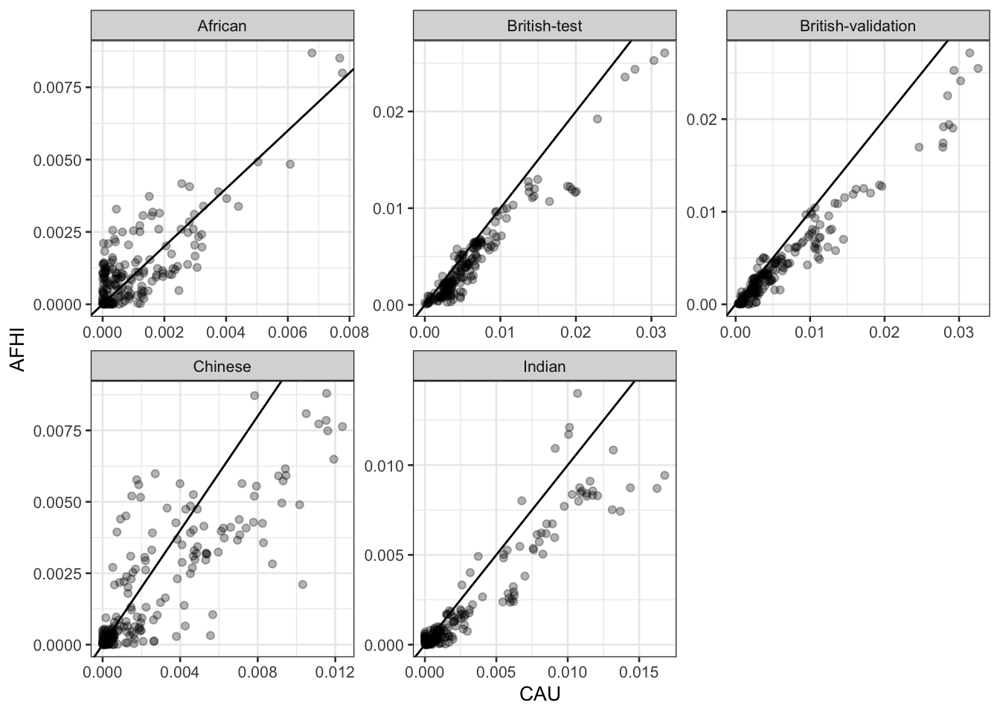
df_cau = df_ptrs %>% filter(model == 'CAU')
best_cau = best_model_based_on_one(df_cau, pop_name = 'British-validation', model_col = 'ptrs_col', score_col = 'r2')
best_cau$perf_in_all %>%
filter(paste(trait, subset) %in% paste(diag_df$trait, diag_df$index)) %>%
ggplot() + geom_violin(aes(x = population, y = transferability)) +
geom_jitter(aes(x = population, y = transferability), height = 0, width = 0.2)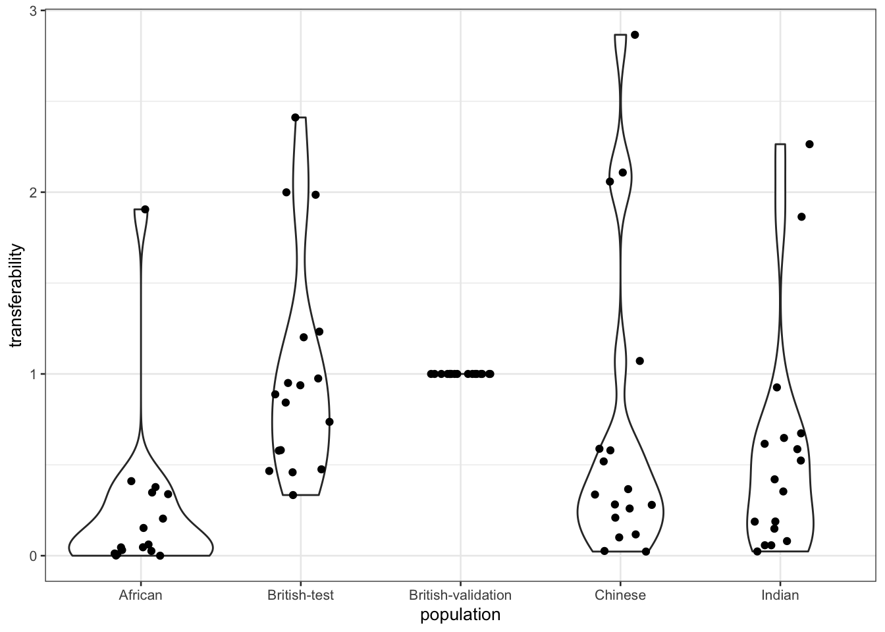
performance_of_best_model = function(best_model, best_pop, candidate_models) {
df_candidate_best = candidate_models %>% filter(paste(trait, ptrs_col, subset) %in% paste(best_model$best_model$trait, best_model$best_model$best_model, best_model$best_model$subset))
df_candidate_best = inner_join(df_candidate_best, best_model$perf_in_all %>% filter(population == best_pop) %>% select(trait, ptrs_col, subset, r2) %>% rename(best_r2 = r2), by = c('trait', 'ptrs_col', 'subset'))
df_candidate_best_perf = df_candidate_best %>% mutate(transferability = r2 / best_r2)
df_candidate_best_perf = inner_join(best_model$perf_in_all, df_candidate_best_perf, by = c('trait', 'population', 'subset', 'ptrs_col'), suffix = c('_best', '_cand')) %>% mutate(ratio_cand_over_best = r2_cand / r2_best)
df_candidate_best_perf
}Loop over all other prediction models.
out_list = list()
for(m in mesa_models) {
# if( m == 'CAU') {
# next
# }
df_tmp = performance_of_best_model(best_cau, 'British-validation', df_ptrs %>% filter(model == m))
out_list[[length(out_list) + 1]] = df_tmp %>% mutate(other_model = m)
}
df_best_cau_all_others = do.call(rbind, out_list)Performance of best CAU model with other prediction models.
df_best_cau_all_others %>%
filter(paste(trait, subset) %in% paste(diag_df$trait, diag_df$index)) %>%
ggplot() + geom_violin(aes(x = population, y = transferability_cand, color = other_model)) +
geom_jitter(aes(x = population, y = transferability_cand, color = other_model), position = position_dodge(width = .9))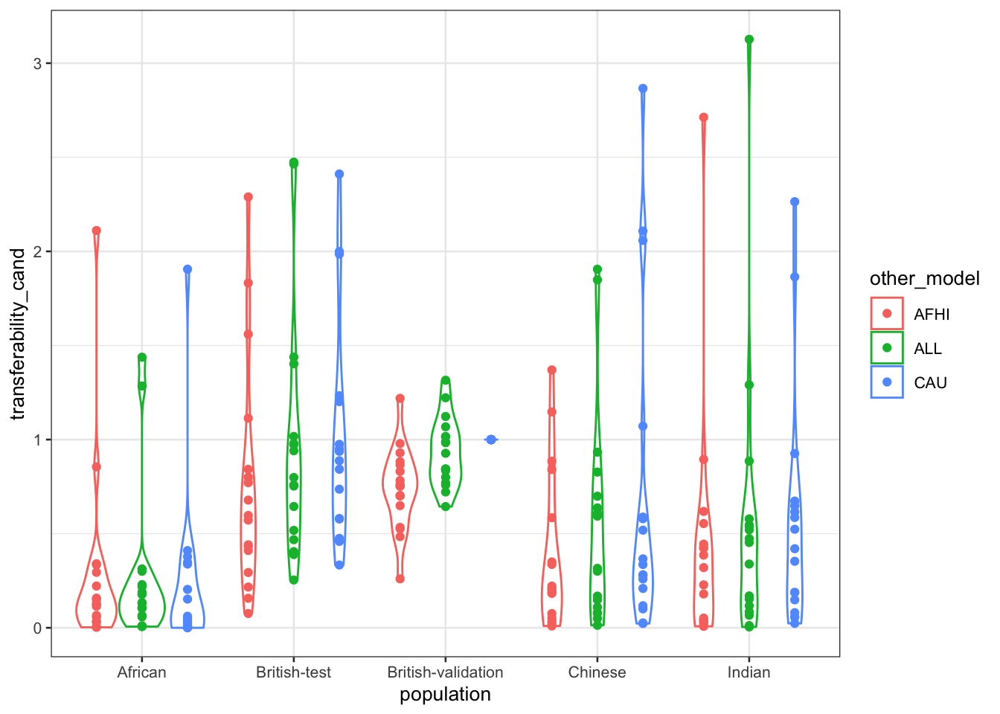
Side-by-side comparing best CAU model with other prediction models
df_best_cau_all_others %>% filter(population != 'British-validation', other_model != 'CAU') %>%
ggplot(aes(x = transferability_best, y = transferability_cand)) +
geom_point(alpha = 0.1) +
facet_grid(population~other_model, scales = 'free') +
geom_abline(slope = 1, intercept = 0) +
scale_x_log10() +
scale_y_log10()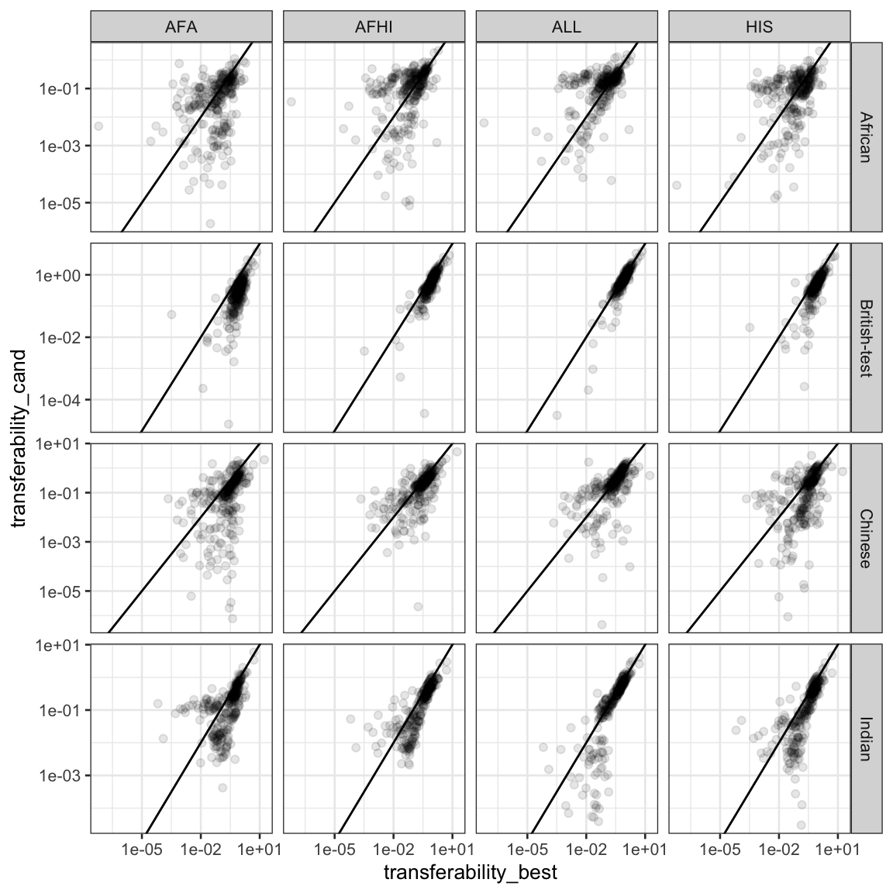
df_best_cau_all_others %>% filter(population != 'British-validation', other_model != 'CAU') %>%
ggplot() + geom_boxplot(aes(x = trait, y = ratio_cand_over_best), alpha = 0.3) + facet_grid(population~other_model, scales = 'free_y') + scale_y_log10() + geom_hline(yintercept = 1) + theme(axis.text.x = element_text(angle = 90, hjust = 1, vjust = 0.5))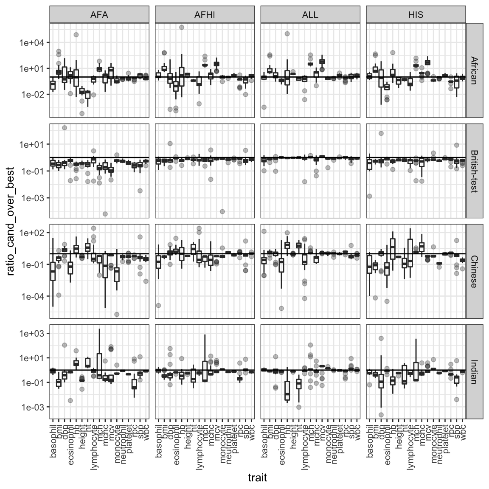
Calculate.
best_for_each = df_ptrs %>% filter(model != 'gtex_v8_ctimp') %>% group_by(trait, subset, model, population) %>% summarize(best_model = ptrs_col[which.max(r2)], max_r2 = max(r2)) %>% ungroup()
best_for_each = inner_join(best_for_each, best_cau$perf_in_all %>% filter(population == 'British-validation') %>% select(r2, trait, subset) %>% rename(reference_r2 = r2), by = c('trait', 'subset'))
best_for_each = best_for_each %>% mutate(transferability = max_r2 / reference_r2)Plot transferability.
best_for_each %>% filter(paste(trait, subset) %in% paste(diag_df$trait, diag_df$index)) %>%
ggplot() + geom_violin(aes(x = population, y = transferability, color = model)) +
geom_jitter(aes(x = population, y = transferability, color = model), position = position_dodge(width = .9))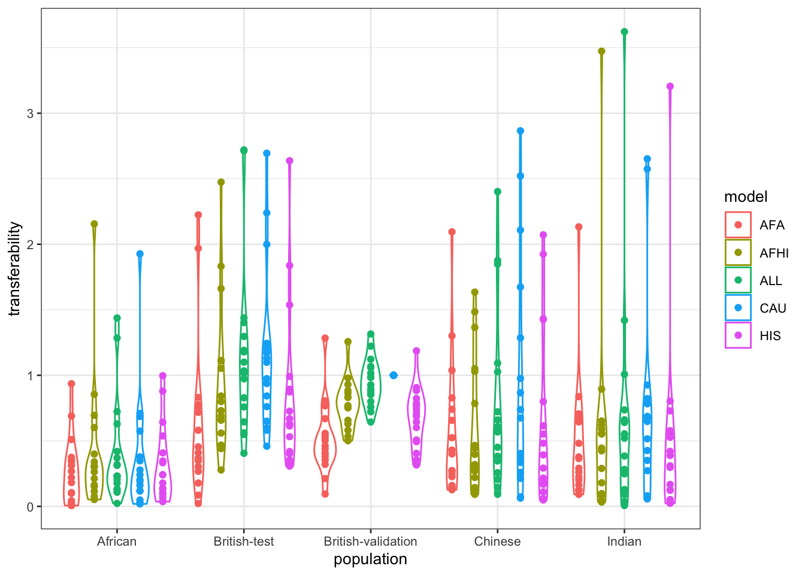
Side-by-side transferability between prediction models.
best_for_each_reference = best_for_each %>% filter(model == 'CAU')
best_for_each = inner_join(best_for_each, best_for_each_reference %>% select(trait, subset, population, transferability), by = c('trait', 'subset', 'population'), suffix = c('_cand', '_best'))
best_for_each = best_for_each %>% mutate(ratio_cand_over_best = transferability_cand / transferability_best)best_for_each %>% filter(population != 'British-validation', model != 'CAU') %>%
ggplot(aes(x = transferability_best, y = transferability_cand)) +
geom_point(alpha = 0.1) +
facet_grid(population~model, scales = 'free') +
geom_abline(slope = 1, intercept = 0) +
scale_x_log10() +
scale_y_log10()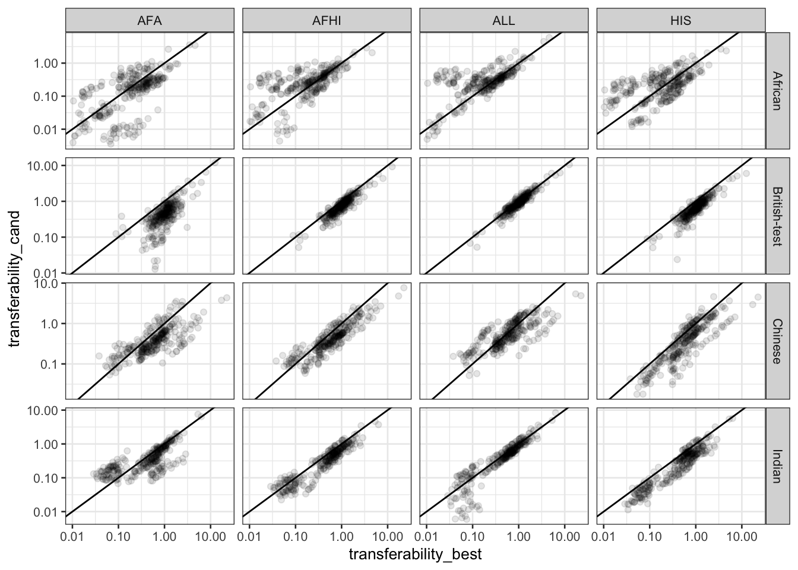
best_for_each %>% filter(population != 'British-validation', model != 'CAU') %>%
ggplot() + geom_boxplot(aes(x = trait, y = ratio_cand_over_best), alpha = 0.3) + facet_grid(population~model, scales = 'free_y') + scale_y_log10() + geom_hline(yintercept = 1) + theme(axis.text.x = element_text(angle = 90, hjust = 1, vjust = 0.5))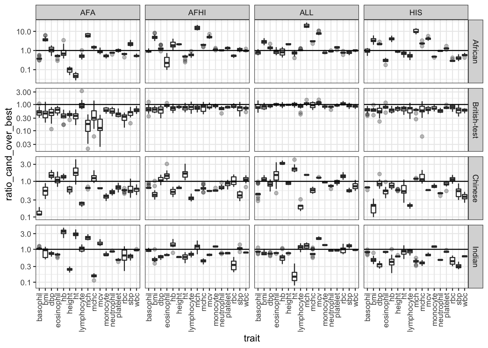
Load
regu = readRDS('../analysis_output/regulability_mesa_and_ctimp.rds')
df_best_cau_all_others$pop = df_best_cau_all_others$population
df_best_cau_all_others$pop[df_best_cau_all_others$pop %in% c('British-test', 'British-validation')] = 'British'
df_best_cau_all_others = inner_join(df_best_cau_all_others, regu, by = c('trait', 'pop' = 'population', 'model'))
best_for_each$pop = best_for_each$population
best_for_each$pop[best_for_each$pop %in% c('British-test', 'British-validation')] = 'British'
best_for_each = inner_join(best_for_each, regu, by = c('trait', 'pop' = 'population', 'model'))Plot
df_best_cau_all_others %>%
filter(paste(trait, subset) %in% paste(diag_df$trait, diag_df$index)) %>%
ggplot() + geom_point(aes(x = h_sq, y = r2_cand)) +
facet_grid(other_model~population, scales = 'free') 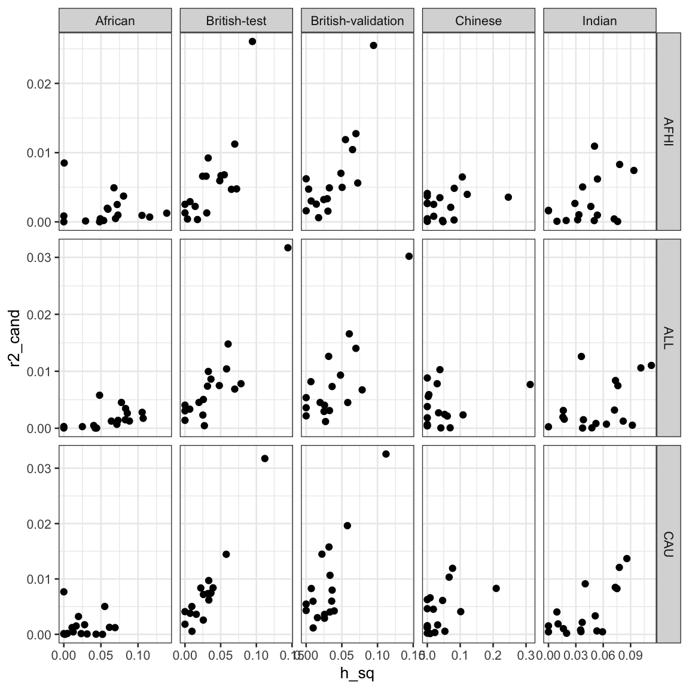
best_for_each %>%
filter(paste(trait, subset) %in% paste(diag_df$trait, diag_df$index)) %>%
ggplot() + geom_point(aes(x = h_sq, y = max_r2)) +
facet_grid(model~population, scales = 'free') 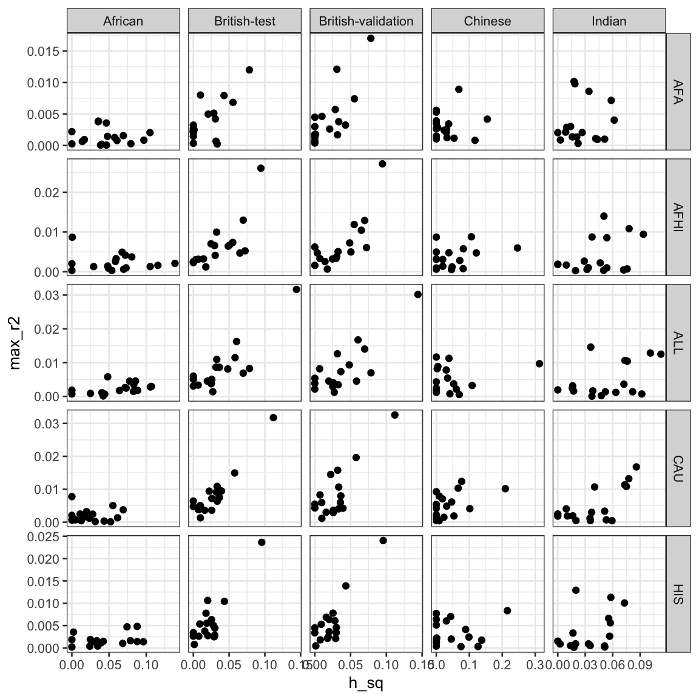